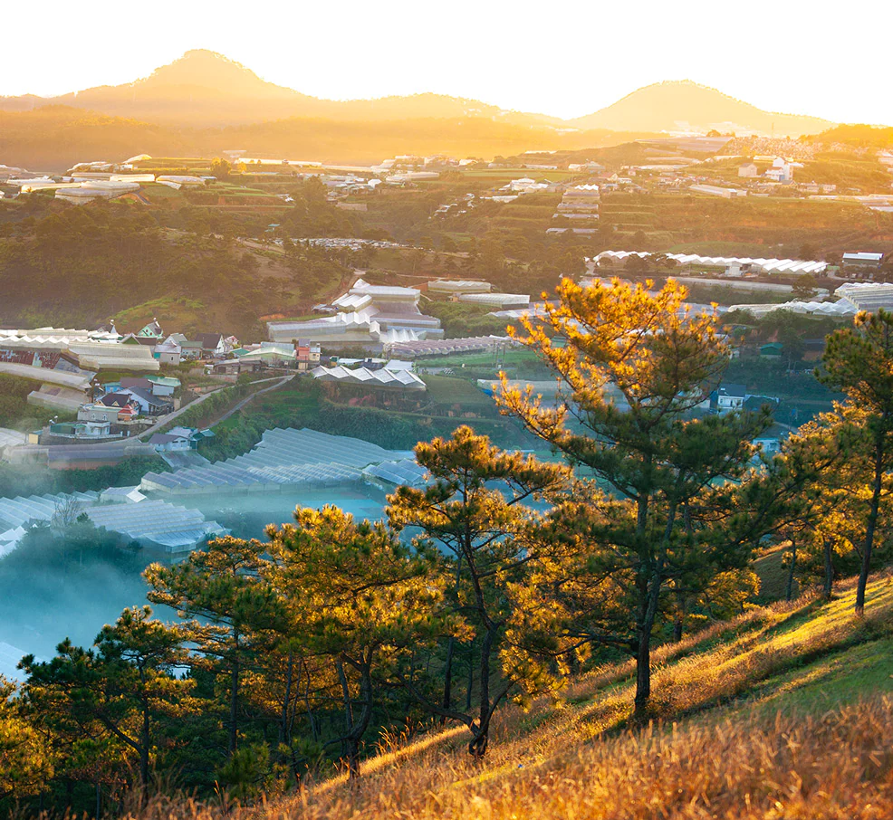
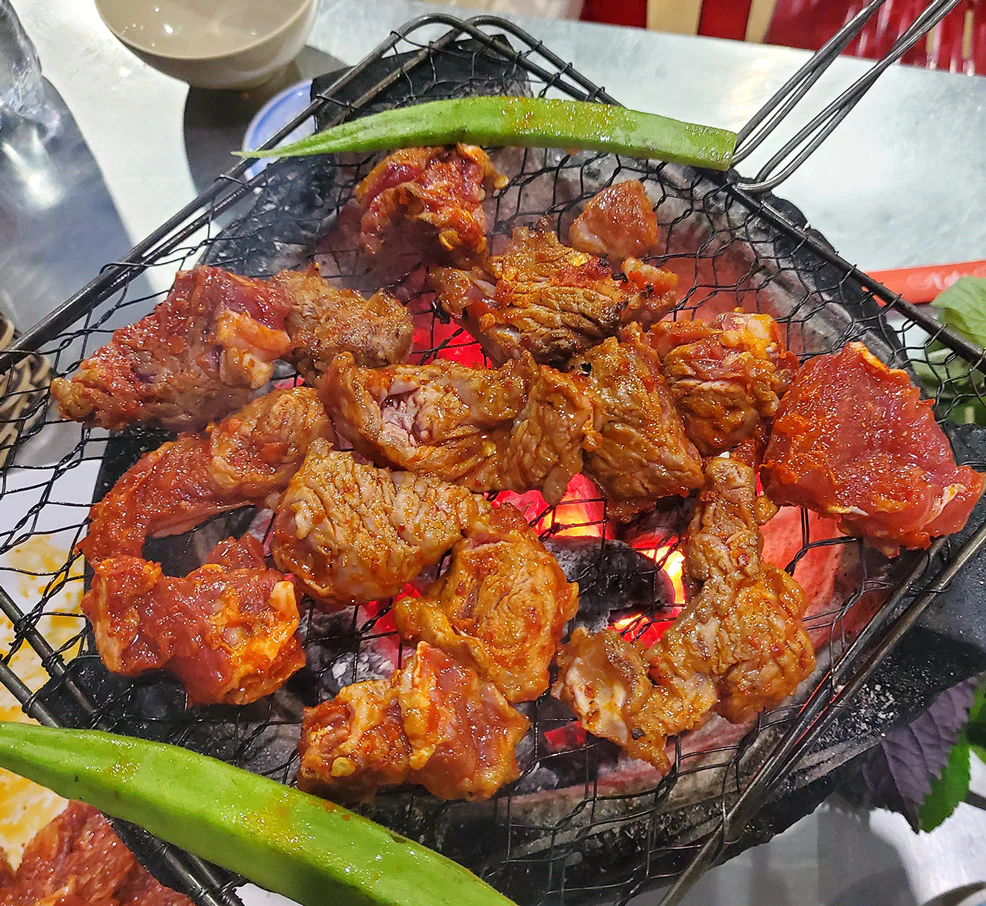

Đà Lạt – Một Paris nho nhỏ

Nằm trên cao nguyên Lâm Viên ở độ cao 1.500m so với mực nước biển, thành phố Đà Lạt mang một vẻ đẹp thơ mộng, đài các, khi thì bừng lên hương sắc của ngàn hoa, lúc lại ẩn hiện giữa màn sương mù lãng đãng. Đà Lạt như một Paris thu nhỏ với những công trình kiến trúc Pháp cổ đã tồn tại hàng thế kỷ. Đây là khu nghỉ dưỡng đầu tiên và hoàn thiện nhất của người Pháp tại Việt Nam, được quy hoạch vào nửa đầu thế kỷ XIX, từng là nơi nghỉ mát lớn nhất Đông Dương lúc bấy giờ.
Phong Cảnh
Đèo Prenn: Đi trên con đường đèo Prenn uốn lượn với hai bên là rừng thông xanh ngát rì rào, bạn sẽ thấy nắng nghịch ngợm xuyên qua những kẽ lá sà xuống đường, chạm vào vai, vào tóc, thấy gió vờn quanh hát khúc ca đại ngàn hòa cùng tiếng chim ca lảnh lót.
Băng qua đèo Prenn sẽ vào đến trung tâm thành phố. Từ đây, bạn có thể lên lịch trình du ngoạn núi Lang Biang, làng Cù Lần, vườn dâu tây, thung lũng Tình Yêu, đồi chè Cầu Đất, thác Datanla, thác Pongour, rừng thông để khám phá trọn vẹn vẻ đẹp thiên nhiên tuyệt vời.
Cây thông cô đơn: Bạn có thể check-in với “cây thông cô đơn” ở đồi Thiên Phúc hay bên hồ Đan Kia - Suối Vàng. Chúng chỉ là những cây thông bình thường mọc lẻ loi một mình nhưng lại thu hút rất nhiều cặp đôi, không chỉ bởi khung cảnh thơ mộng mà còn bởi sự tò mò trước lời đồn rằng: cặp đôi nào đến đây về cũng sẽ chia tay.
Các công trình kiến trúc Pháp cổ: Một điểm nhất định không thể bỏ qua khi đến Đà Lạt chính là các công trình kiến trúc Pháp độc đáo đã trở thành di sản tại đây. Nhà thờ Con Gà, trường Cao đẳng Sư phạm Đà Lạt, ga Đà Lạt, dinh Bảo Đại, mỗi công trình đều mang nét kiến trúc đặc sắc gắn với những câu chuyện lịch sử thú vị.
Ga Đà Lạt: Ga Đà Lạt là nhà ga cổ nhất còn tồn tại ở Đông Dương, mang vẻ đẹp độc đáo kết hợp giữa nghệ thuật kiến trúc Pháp và kiểu cách mái nhà rông Tây Nguyên.
Các biệt thự Pháp cổ: Giữa thành phố, ẩn hiện dưới cánh rừng thông xanh thẳm là hàng nghìn ngôi biệt thự cổ của khu nghỉ dưỡng năm xưa, vẫn còn giữ được nét kiến trúc Pháp trên từng hàng gạch, mái ngói, ô cửa.
Ẩm thực
Ẩm thực Đà Lạt nổi tiếng với những hàng quán ăn vặt và văn hóa chợ đêm độc đáo. Những miếng bánh căn, bánh ướt lòng gà, kem bơ, bánh tráng nướng, canh atiso hầm giò, lẩu rau Đà Lạt, lẩu cá tầm Đà Lạt là đặc sản mà bạn nhất định phải thử khi đến nơi đây. Giữa tiết trời mát mẻ, đôi lúc se lạnh mà được la cà phố xá nhâm nhi những thức đồ thơm ngon, cảm nhận cái vị đậm đà, mằm mặn hay bùi, ngậy, ngọt ngào ấy thì thật tuyệt biết bao. Với khí hậu mát mẻ, Đà Lạt là xứ sở của cây trái, đặc biệt là dâu tây. Đến đây, bạn nhất định phải mua một vài giỏ dâu về làm quà cho gia đình, bạn bè. Những quả dâu đỏ óng, mượt mà như mời gọi, quyến rũ, làm nao lòng cả những người khó tính nhất. Từ dâu, người Đà Lạt còn chế biến ra vô vàn món ngon như mứt dâu, kem dâu, dâu tây lắc để thỏa lòng thực khách.
Các hoạt động
Giữa thiên nhiên tươi đẹp, hùng vĩ nơi cao nguyên Lâm Viên, bạn có thể trải nghiệm nhiều hoạt động mạo hiểm, dã ngoại như: đu dây vượt thác Datanla, chinh phục đỉnh Lang Biang, cắm trại ở làng Cù Lần… Những khoảnh khắc cùng nhau hét to trước dòng thác trắng xóa, nhảy lên vì vui sướng khi chinh phục đỉnh núi hay quây quần bên lều trại trò chuyện, đùa vui sẽ xua tan mọi mệt nhọc của cuộc sống xô bồ thường ngày, đem lại cho bạn giây phút yên bình, thư thái. Nếu du lịch Đà Lạt vào dịp cuối năm, bạn còn được hòa mình vào không khí tưng bừng, nhộn nhịp của Festival Hoa Đà Lạt. Lễ hội diễn ra 2 năm một lần quanh khu vực Hồ Xuân Hương, trưng bày hàng nghìn loại hoa từ nhiều vùng miền cả nước và một số quốc gia lân cận cùng nhiều hoạt động đặc sắc như: diễu hành hoa đường phố, lễ cưới tập thể, lễ hội rượu vang...